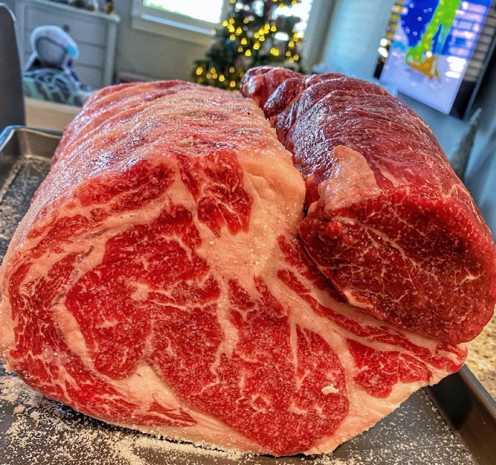

Perfect Prime Rib Guide
Perfect-Prime-Rib • Beef Roast • Method Guide

After cooking dozens of rib roasts, this guide distills the process into a repeatable system: dry brine, low-and-slow roasting, a high-heat finish, and proper resting. The goal is an evenly rosy interior with a browned crust—not grey bands of overcooked meat.
Choosing the Roast
Bone-in rib roast is preferred—not because bones add flavor, but because they help the meat cook more evenly and protect it from direct heat. Boneless works too; if you use boneless, tie the roast every 1½–2 inches for even thickness.
Dry Brining (Day Before)
Why dry brine: Salt penetrates and denatures muscle proteins so they retain more moisture as they cook. Liquid brines can waterlog and dilute beef flavor; dry brining seasons deeply without that downside.
- Pat the roast dry with paper towels.
- Season generously with kosher salt on all sides.
- Place the roast on a rack set over a sheet pan, uncovered, in the refrigerator.
- Dry brine for 12–24 hours, up to 48 hours.
- Do not add garlic, herbs, or other flavorings at this stage—salt is the only thing that actually penetrates deeply.
The Searing Myth
Searing does not "seal in" juices. Browning requires moisture loss; hard searing at the start dries the exterior quickly and overcooks the outer layer while the center remains raw. That’s how you get grey bands outside and pink in the middle. The goal is an evenly rosy interior edge to edge, with a crust formed at the end, not the beginning.
Cooking Process
1. Low-and-Slow Roast
- Preheat the oven to 225°F.
- Place the dry-brined roast on a rack in a roasting pan.
- Roast until the internal temperature reaches about 120°F for medium-rare.
- For a 5 lb roast, expect up to 3½ hours at 225°F.
- Use an instant-read thermometer; ignore exact time—go by temp.
2. Seasoned High-Heat Finish
- Remove the roast from the oven when it hits ~120°F.
- Increase oven temperature to 500°F or switch to broil.
- While the oven comes up to temp (about 15 minutes), mix a finishing rub:
- Soft butter or ghee
- Fresh thyme, oregano, and chives
- Fresh cracked black pepper
- Roasted garlic, crushed into a paste
- Optional: ancho chili for gentle heat and color
- Rub the mixture all over the roast.
- Return the roast to the 500°F oven and cook until the exterior is browned and crusty and the internal temperature reaches about 125–130°F for medium-rare.
Resting (Most Crucial Step)
Do not skip this: Resting lets the juices redistribute. Slice too soon and they flood onto the cutting board instead of staying in the meat.
- Remove the roast from the oven and tent loosely with foil.
- Let it rest at least 20 minutes before carving.
Slicing
- Use a long, sharp slicing knife.
- Avoid sawing; make long, confident strokes for clean slices.
- As juices collect on the board, reserve them.
- Simmer the collected juices with a bit of butter to drizzle over slices.
FAQ
How much prime rib should I buy?
- Bone-in: roughly 1 lb per person (e.g., 5 lb roast serves about 5 people).
- Boneless: roughly 8 oz per person.
How long can I dry-brine?
- At least 12–24 hours; up to 48 hours is fine.
- Always dry-brine uncovered in the fridge to dry the exterior for better browning.
Can I use a smoker or grill?
- Yes. You can do the low-and-slow portion on a smoker or grill.
- Use indirect heat, watch the temperature carefully, and aim for the same internal temps.
What salt should I use?
- Use kosher salt for brining and seasoning.
- Finish slices with a good sea salt if you like.
Rough timing?
- Plan for about 4–4½ hours total for medium-rare on a 5 lb roast, including the high-heat finish and rest.